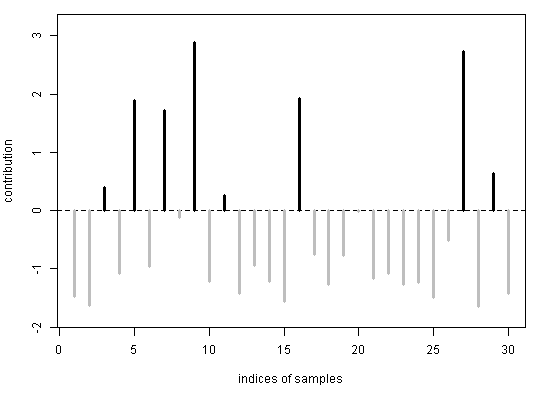

Even though the function omnibus tests
a single hypothesis on a whole covariate set,
this function allows to calculate
the individual contributions of n samples or
p covariates to the test statistic.
proprius(y, X, type, offset = NULL, group = NULL, mu = NULL, phi = NULL, alpha = NULL, perm = 1000, plot = TRUE)
Arguments
| y | response variable:
numeric vector of length |
|---|---|
| X | covariate set:
numeric matrix with |
| type | character 'covariates' or 'samples' |
| offset | numeric vector of length |
| group | confounding variable:
factor of length |
| mu | mean parameters:
numeric vector of length |
| phi | dispersion parameter: non-negative real number |
| alpha | significance level: real number between 0 and 1 |
| perm | number of iterations: positive integer |
| plot | plot of results: logical |
Value
If alpha=NULL, then the function returns a numeric vector,
and else a list of numeric vectors.
Details
The user can provide a common mu for all samples
or sample-specific mu, and a common phi.
Setting phi equal to zero
is equivalent to using the Poisson model.
If mu is missing, then mu is estimated from y.
If phi is missing, then mu and phi
are estimated from y.
The offset is only taken into account
for estimating mu or phi.
The user can provide the confounding variable group.
Note that each level of group must appear at least twice
in order to allow stratified permutations.
References
A Rauschenberger, MA Jonker, MA van de Wiel, and RX Menezes (2016). "Testing for association between RNA-Seq and high-dimensional data", BMC Bioinformatics. 17:118. html pdf (open access)
JJ Goeman, SA van de Geer, F de Kort, and HC van Houwelingen (2004). "A global test for groups of genes: testing association with a clinical outcome", Bioinformatics. 20:93-99. html pdf (open access)
See also
The function omnibus tests for associations
between an overdispersed response variable and a high-dimensional
covariate set.
The function cursus tests for association
between RNA-Seq and local genetic or epigenetic alternations
across the whole genome.
All other functions of the R package globalSeq
are internal.
Examples
# simulate high-dimensional data n <- 30; p <- 100 y <- rnbinom(n,mu=10,size=1/0.25) X <- matrix(rnorm(n*p),nrow=n,ncol=p) # decomposition proprius(y,X,type="samples")#> [1] -1.473829651 -1.621989536 0.389933792 -1.083847301 1.892962633 #> [6] -0.960717613 1.721503713 -0.122347060 2.878808190 -1.212848450 #> [11] 0.265357110 -1.419499667 -0.945988913 -1.218230787 -1.565611811 #> [16] 1.924302618 -0.749555757 -1.266216291 -0.778061491 -0.009607322 #> [21] -1.164619359 -1.077795751 -1.272294761 -1.232923857 -1.496262593 #> [26] -0.515822170 2.721173151 -1.648988791 0.638509691 -1.424787341proprius(y,X,type="covariates")#> [1] -0.061952584 0.592890632 -0.092819492 0.084168673 -0.397585279 #> [6] -0.183539882 0.031889996 -0.426508046 -0.259698391 -0.265361798 #> [11] -0.317232615 0.072810328 -0.239941836 -0.245169345 -0.365328320 #> [16] -0.167861221 0.019013502 -0.293306936 -0.074805315 -0.269415642 #> [21] 0.270934190 -0.086943070 -0.619497569 0.755689349 -0.227954044 #> [26] -0.205152081 -0.223616292 -0.376515968 -0.197909498 0.272830697 #> [31] -0.417295924 -0.572140052 -0.139501582 -0.418759569 -0.195663061 #> [36] -0.188234195 -0.521401610 -0.415634949 -0.346467928 -0.349298405 #> [41] -0.270644797 -0.058625362 -0.435316923 -0.261076519 -0.314005429 #> [46] -0.376683458 -0.544577063 0.139635838 -0.452980287 0.660662887 #> [51] -0.284095283 -0.529192814 -0.293848069 -0.152128001 -0.451823530 #> [56] 0.598375469 0.024277366 0.386251570 0.118416105 -0.275617185 #> [61] -0.243857126 -0.235047343 0.008511704 -0.275980122 -0.173835916 #> [66] -0.270343598 -0.433204607 -0.301079993 -0.452220868 -0.437245563 #> [71] 0.909077707 1.224714475 0.035826449 -0.203264859 1.192802248 #> [76] 0.094335123 -0.245741028 0.620533156 -0.302885587 -0.508894499 #> [81] -0.331829320 -0.218798231 -0.360255918 -0.162935165 -0.323970670 #> [86] -0.143899832 -0.247114748 -0.161513535 -0.044980916 -0.136249689 #> [91] 0.648363088 0.604569515 0.332039489 -0.302868514 -0.468019955 #> [96] -0.131218846 -0.247416189 -0.281275540 -0.009120144 -0.009719390